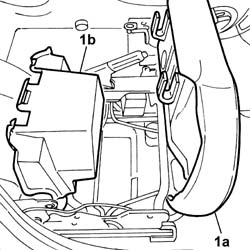
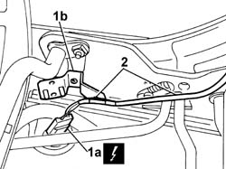
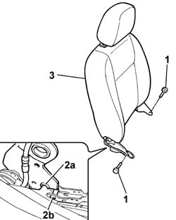

7045A20 SQUAB COMPLETE with a front seat with air-bag, height adjustment and lumbar adjustment, left or right - R.R.
- Path
- Procedures > 70 FITTINGS > 7045 FRONT SEATS > 7045A front seat assembly > 7045A20 SQUAB COMPLETE with a front seat with air-bag, height adjustment and lumbar adjustment, left or right - R.R.
- Kind
- repair procedure (removal / refitting; the operation number is the code)
- Applies to
- all engines; all production periods
- Interactive page
- https://sloeber94.github.io/elrnDB-fPnd/en/#/2753228
Applies to: all engines; all production periods
 Removing
Removing
 Refitting
Refitting7045A43 seat exterior guard - r r
7045A56 LEVER controlling DRIVER'S seat height adjustment device - R.R .
7045A37 INTERNAL COVER for front seat with height adjustment, left or right - R.R .
1. If working on a seat fitted with a passenger side bag, lift up the cushion (1a) and the compartment (1b).

Applies to: all engines; all production periods
1. Disconnect the electrical connection for the side bag (1a) and release the connector from the mounting bracket (1b).
2. Release the side bag wiring from the frame.
 | Name | Connector |
|---|---|---|
1a | Driver's Side Bag | Q30 |
| Name | Connector |
|---|---|---|
1a | Passenger Side Bag | Q31 |

Applies to: all engines; all production periods
1. Undo the bolts fixing the backrest assembly to the front seat frame.
2. Lower the backrest assembly then lift up it in order to release the backrest slot (2a) from the pin (2b) on the guides.
3. Remove the backrest assembly from the vehicle.

Applies to: all engines; all production periods
Refitting
RemovingCheck the condition of the backrest assembly.
Fit the backrest assembly positioning the slots on the guide pins, then turn the backrest forwards until the fixing bolt openings are aligned.
Tighten the bolts fixing the backrest assembly to the front seat frame.
Position the side bag wiring and secure it to the frame.
Connect the electrical connection for the Side Bag.
| Name | Connector |
|---|---|---|
- | Driver's Side Bag | Q30 |
| Name | Connector |
|---|---|---|
- | Passenger Side Bag | Q31 |
If the operation has been carried out on the passenger front seat fitted with a compartment, reposition the compartment in the housing and fold over the cushion into position securing the devices attaching it to the guide frame.
7045A37 INTERNAL COVER for front seat with height adjustment, left or right - R.R .
7045A56 LEVER controlling DRIVER'S seat height adjustment device - R.R .